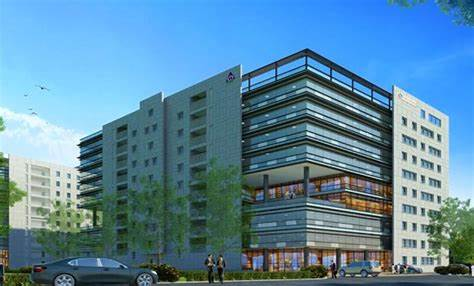

COMMERZONE!



Chennai is a bustling metropolis and has become one of the most important technological zones in the country. In the middle of this booming city is Commerzone Chennai, one of the top IT parks in Chennai developed by K Raheja. The Commerzone Chennai is one of the largest IT parks in Chennai and includes a number of amenities, living spaces and recreational areas in addition to prime office spaces. It located in Porur, one of the best connected localities in Chennai. Because of its location advantage, Commerzone Chennai is located close to the best colleges, schools and healthcare centres in the city. Commerzone Chennai is among the most renowned IT parks in Chennai because of its superior connectivity to many important facilities. Families working here can find quality residential spaces at a cost lower than other metro cities. There are also a number of prestigious schools and colleges, so your children are sure to receive a world-class education. Porur is located in close proximity to the Chennai airport, making it easily accessible by road and air. If you are interested in Commerzone Chennai, contact K Raheja to learn more about one of the best IT parks the city of Chennai has to offer.